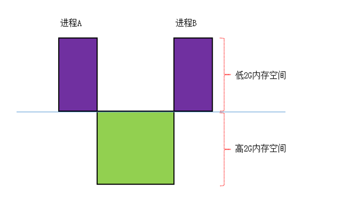
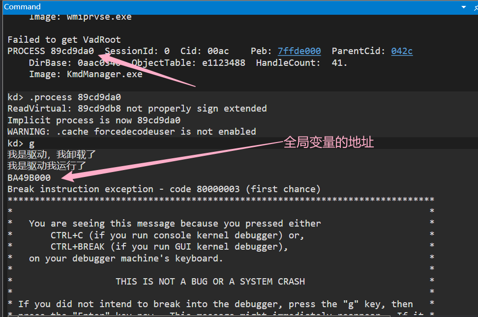
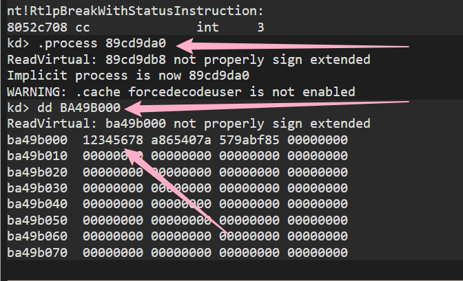
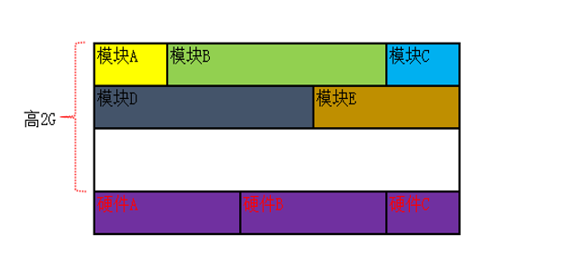
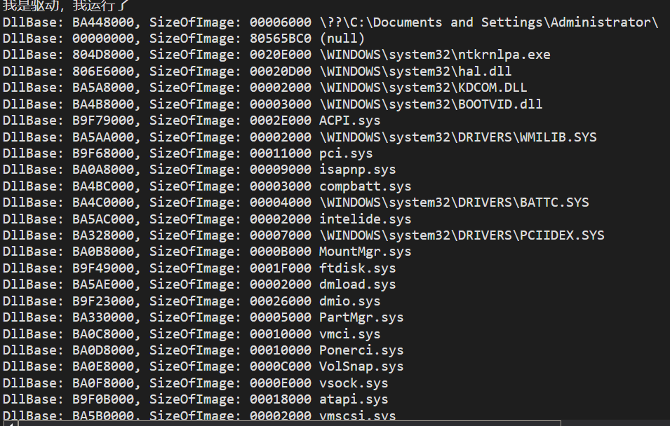
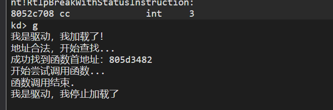

# 内核空间
每个进程的低 2G 都是独立的，它们所对应的物理页都是不一样的，而高 2G 所对应的物理页都是相同的。
概念图:

# 实验验证
写一个驱动程序定义一个全局变量，在不同进程中查看。
#include<ntddk.h> | |
ULONG g_Value = 0x12345678; | |
VOID DriverUnload(PDRIVER_OBJECT pdriver) { | |
DbgPrint("我是驱动，我卸载了\n"); | |
} | |
NTSTATUS DriverEntry(PDRIVER_OBJECT pdriver, PUNICODE_STRING reg_path) { | |
DbgPrint("我是驱动我运行了\n"); | |
DbgPrint("%p\n", &g_Value); | |
pdriver->DriverUnload = DriverUnload; | |
return STATUS_SUCCESS; | |
} |


# 内核模块
硬件的种类繁多，不可能做一个兼容所有硬件的内核，因此，微软提供规定的接口格式，让硬件驱动人员按照规定的格式编写 “驱动程序”
这些驱动程序每一个都是一个模块，称为 “内核模块”，可以加载到内核中，并遵守 PE 结构。但本质上讲，任意一个.sys 文件与内核文件没有区别
不管是我们自己编写的 .sys 文件，还是 Windows 自带的内核文件（如 ntoskrnl.exe），它们在内核中的地位是相同的，都是内核模块中的其中一个

# 驱动对象
# _DRIVER_OBJECT 结构体
kd> dt _DRIVER_OBJECT
nt!_DRIVER_OBJECT
+0x000 Type : Int2B
+0x002 Size : Int2B
+0x004 DeviceObject : Ptr32 _DEVICE_OBJECT
+0x008 Flags : Uint4B
+0x00c DriverStart : Ptr32 Void
+0x010 DriverSize : Uint4B
+0x014 DriverSection : Ptr32 Void
+0x018 DriverExtension : Ptr32 _DRIVER_EXTENSION
+0x01c DriverName : _UNICODE_STRING
+0x024 HardwareDatabase : Ptr32 _UNICODE_STRING
+0x028 FastIoDispatch : Ptr32 _FAST_IO_DISPATCH
+0x02c DriverInit : Ptr32 long
+0x030 DriverStartIo : Ptr32 void
+0x034 DriverUnload : Ptr32 void
+0x038 MajorFunction : [28] Ptr32 long
其中对我们来说比较重要的结构:DriverStart： 驱动模块在内核中的地址DriverSize： 驱动模块在内核中的大小DriverName： 驱动模块在内核中的名字DriverSection： 指向 _LDR_DATA_TABLE_ENTRY 结构体
# _LDR_DATA_TABLE_ENTRY 结构体
描述：包含了当前内核模块的具体信息，以及其它内核模块的双向链表。
kd> dt _LDR_DATA_TABLE_ENTRY
nt!_LDR_DATA_TABLE_ENTRY
+0x000 InLoadOrderLinks : _LIST_ENTRY
+0x008 InMemoryOrderLinks : _LIST_ENTRY
+0x010 InInitializationOrderLinks : _LIST_ENTRY
+0x018 DllBase : Ptr32 Void
+0x01c EntryPoint : Ptr32 Void
+0x020 SizeOfImage : Uint4B
+0x024 FullDllName : _UNICODE_STRING
+0x02c BaseDllName : _UNICODE_STRING
+0x034 Flags : Uint4B
+0x038 LoadCount : Uint2B
+0x03a TlsIndex : Uint2B
+0x03c HashLinks : _LIST_ENTRY
+0x03c SectionPointer : Ptr32 Void
+0x040 CheckSum : Uint4B
+0x044 TimeDateStamp : Uint4B
+0x044 LoadedImports : Ptr32 Void
+0x048 EntryPointActivationContext : Ptr32 Void
+0x04c PatchInformation : Ptr32 Void
和 3 环有点区别，在 0 环中 InMemoryOrderLinks 和 InInitializationOrderLinks 是没用的，只需要关注第一个链表 InLoadOrderLinks 。
_LIST_ENTRY 这个结构体存了两个地址，指向前一个节点和下一个节点。
kd> dt _LIST_ENTRY
ntdll!_LIST_ENTRY
+0x000 Flink : Ptr32 _LIST_ENTRY
+0x004 Blink : Ptr32 _LIST_ENTRY
比较重要的结构:InLoadOrderLinks： 双向链表，包含所有内核模块DllBase： 当前内核模块起始地址SizeOfImage： 当前内核模块的大小FullDllName： 当前内核模块的完整路径BaseDllName： 当前内核模块的模块名
# 遍历内核模块
我们可以发现，我们可以由一个内核模块遍历处所有的内核模块。
通过这个 InLoadOrderLinks ，我们可以遍历整个高 2G 的模块了。 InLoadOrderLinks.Flink 指向的就是下一个 _LDR_DATA_TABLE_ENTRY 。
// 遍历内核模块 | |
#include<ntddk.h> | |
typedef struct _LDR_DATA_TABLE_ENTRY | |
{ | |
LIST_ENTRY InLoadOrderLinks; | |
LIST_ENTRY InMemoryOrderLinks; | |
LIST_ENTRY InInitializationOrderLinks; | |
PVOID DllBase; | |
PVOID EntryPoint; | |
UINT32 SizeOfImage; | |
UNICODE_STRING FullDllName; | |
UNICODE_STRING BaseDllName; | |
UINT32 Flags; | |
UINT16 LoadCount; | |
UINT16 TlsIndex; | |
LIST_ENTRY HashLinks; | |
PVOID SectionPointer; | |
UINT32 CheckSum; | |
UINT32 TimeDateStamp; | |
PVOID LoadedImports; | |
PVOID EntryPointActivationContext; | |
PVOID PatchInformation; | |
} LDR_DATA_TABLE_ENTRY, * PLDR_DATA_TABLE_ENTRY; | |
VOID DriverUnload(PDRIVER_OBJECT pdriver) { | |
DbgPrint("我是驱动，我卸载了\n"); | |
} | |
NTSTATUS DriverEntry(PDRIVER_OBJECT pdriver, PUNICODE_STRING reg_path) { | |
DbgPrint("我是驱动，我运行了\n"); | |
PLDR_DATA_TABLE_ENTRY pLdteHead; // 内核模块链表头 | |
PLDR_DATA_TABLE_ENTRY pLdteCur; // 遍历指针 | |
pLdteHead = (PLDR_DATA_TABLE_ENTRY)pdriver->DriverSection; | |
pLdteCur = pLdteHead; | |
do | |
{ | |
DbgPrint("DllBase: %p, SizeOfImage: %08X %wZ\n", pLdteCur->DllBase, pLdteCur->SizeOfImage, &(pLdteCur->FullDllName)); | |
pLdteCur = (PLDR_DATA_TABLE_ENTRY)pLdteCur->InLoadOrderLinks.Flink; | |
} while (pLdteHead != pLdteCur); | |
pdriver->DriverUnload = DriverUnload; | |
return STATUS_SUCCESS; | |
} |

# 定位未导出函数 PspTerminateProcess
我们想找未导出函数 PspTerminateProcess ，用来杀进程的。学习以下几种方法。
# windbg+pdb
在有内核 PDB 的情况下，用 windbg 可以直接找到该函数：
kd> u PspTerminateProcess l2e | |
nt!PspTerminateProcess: | |
805d3482 8bff mov edi,edi | |
805d3484 55 push ebp | |
805d3485 8bec mov ebp,esp | |
805d3487 56 push esi | |
805d3488 64a124010000 mov eax,dword ptr fs:[00000124h] | |
805d348e 8b7508 mov esi,dword ptr [ebp+8] | |
805d3491 3b7044 cmp esi,dword ptr [eax+44h] | |
805d3494 7507 jne nt!PspTerminateProcess+0x1b (805d349d) | |
805d3496 b80d0000c0 mov eax,0C000000Dh | |
805d349b eb5a jmp nt!PspTerminateProcess+0x75 (805d34f7) | |
805d349d 57 push edi | |
805d349e 8dbe48020000 lea edi,[esi+248h] | |
805d34a4 f6470120 test byte ptr [edi+1],20h | |
805d34a8 7412 je nt!PspTerminateProcess+0x3a (805d34bc) | |
805d34aa 8d8674010000 lea eax,[esi+174h] | |
805d34b0 50 push eax | |
805d34b1 56 push esi | |
805d34b2 6854345d80 push offset nt!NtTerminateProcess+0x14c (805d3454) | |
805d34b7 e8f2eeffff call nt!PspCatchCriticalBreak (805d23ae) | |
805d34bc 6a08 push 8 | |
805d34be 58 pop eax | |
805d34bf f00907 lock or dword ptr [edi],eax | |
805d34c2 6a00 push 0 | |
805d34c4 56 push esi | |
805d34c5 e8ca560000 call nt!PsGetNextProcessThread (805d8b94) | |
805d34ca 8bf8 mov edi,eax | |
805d34cc 85ff test edi,edi | |
805d34ce 741e je nt!PspTerminateProcess+0x6c (805d34ee) | |
805d34d0 ff750c push dword ptr [ebp+0Ch] | |
805d34d3 57 push edi | |
805d34d4 e807fdffff call nt!PspTerminateThreadByPointer (805d31e0) | |
805d34d9 57 push edi | |
805d34da 56 push esi | |
805d34db e8b4560000 call nt!PsGetNextProcessThread (805d8b94) | |
805d34e0 8bf8 mov edi,eax | |
805d34e2 85ff test edi,edi | |
805d34e4 75ea jne nt!PspTerminateProcess+0x4e (805d34d0) | |
805d34e6 3986bc000000 cmp dword ptr [esi+0BCh],eax | |
805d34ec 7406 je nt!PspTerminateProcess+0x72 (805d34f4) | |
805d34ee 56 push esi | |
805d34ef e86e05ffff call nt!ObClearProcessHandleTable (805c3a62) | |
805d34f4 33c0 xor eax,eax | |
805d34f6 5f pop edi | |
805d34f7 5e pop esi | |
805d34f8 5d pop ebp | |
805d34f9 c20800 ret 8 |
805d3482 就是函数头，然而这个值由于重定位，可能会变的，所以我们就要用其他办法，确保每次都能找到这个函数。
# 通过已导出函数
第二种办法是根据已导出函数找未导出函数，在驱动里找已导出函数使用的函数是 MmGetSystemRoutineAddress 。我们通过 IDA 交叉引用，并没有找到调用 PspTerminateProcess 的导出函数。
# 模块基址 + 偏移
虽然模块基址会变，但是函数相对基址的偏移是不变的，通过这个规律也可以找到想要的函数。
PspTerminateProcess 相对内核基址的偏移 = 8062f050 - 804D8000 = 157050
只要找到内核基址，加上 0x157050 就是 PspTerminateProcess 的地址。
# 特征码匹配（最常用）
特征码提取时，要避免使用全局变量等和重定位有关的指令，也要避免提取这种所有函数都有的指令。
805d3482 8bff mov edi,edi
805d3484 55 push ebp
805d3485 8bec mov ebp,esp
805d3487 56 push esi
我是跳着提取特征码的:
// 函数 PspTerminateProcess 开头对应的硬编码 | |
pShellCode[0] = (UINT32)0x8b55ff8b; | |
// 相对函数开头偏移 0X0C 个字节后对应的硬编码 | |
pShellCode[1] = (UINT32)0x3b08758b; | |
// 相对函数开头偏移 0X22 个字节后对应的硬编码 | |
*(pShellCode + 2) = (UINT32)0x200147f6; | |
// 相对函数开头偏移 0X48 个字节后对应的硬编码 | |
*(pShellCode + 3) = (UINT32)0xff85f88b; | |
// 相对函数开头偏移 0X6A 个字节后对应的硬编码 |
代码如下：
#include<ntifs.h> | |
#define FristOffset 0x0 | |
#define SecondOffset 0x0C | |
#define ThirdOffset 0x22 | |
#define FourthOffset 0x48 | |
#define FifthOffset 0x6A | |
typedef struct _LDR_DATA_TABLE_ENTRY { | |
LIST_ENTRY InLoadOrderLinks; | |
LIST_ENTRY InMemoryOrderLinks; | |
LIST_ENTRY InInitializationOrderLinks; | |
PVOID DllBase; | |
PVOID EntryPoint; | |
UINT32 SizeOfImage; | |
UNICODE_STRING FullDllName; | |
UNICODE_STRING BaseDllName; | |
UINT32 Flages; | |
UINT16 LoadCount; | |
UINT16 TlsIndex; | |
LIST_ENTRY HashLinks; | |
PVOID SectionPointer; | |
UINT32 CheckSum; | |
UINT32 TimeDateStamp; | |
PVOID LoadedImports; | |
PVOID EntryPointActivationContext; | |
PVOID PatchInformation; | |
}LDR_DATA_TABLE_ENTRY,*PLDR_DATA_TABLE_ENTRY; | |
// 定义 PspTerminateProcess 函数指针 | |
typedef NTSTATUS(*_PspTerminateProcess)(PEPROCESS pEprocess, NTSTATUS ExitCode); | |
_PspTerminateProcess PspTerminateProcess = NULL; | |
VOID DriverUnload(PDRIVER_OBJECT pdriver) { | |
DbgPrint("我是驱动，我停止加载了\n"); | |
} | |
// 获取内核基址，大小 | |
VOID GetKernelBase(IN PDRIVER_OBJECT driver, OUT PVOID* pKrnlBase, OUT PUINT32 uKrnlImageSize) | |
{ | |
PLDR_DATA_TABLE_ENTRY pLdteHead; // 内核模块链表头 | |
PLDR_DATA_TABLE_ENTRY pLdteCur; // 遍历指针 | |
UNICODE_STRING usBaseDllNameNtoskrnl, usDllNameNtkrnlpa; // 内核模块名 | |
// 两种分页模式下的内核模块 | |
RtlInitUnicodeString(&usBaseDllNameNtoskrnl, L"ntoskrnl.exe"); | |
RtlInitUnicodeString(&usDllNameNtkrnlpa, L"ntkrnlpa.exe"); | |
pLdteHead = (PLDR_DATA_TABLE_ENTRY)driver->DriverSection; | |
pLdteCur = pLdteHead; | |
do | |
{ | |
if ( | |
( | |
(RtlCompareUnicodeString(&pLdteCur->BaseDllName, &usBaseDllNameNtoskrnl, TRUE)) | |
|| | |
(RtlCompareUnicodeString(&pLdteCur->BaseDllName, &usBaseDllNameNtoskrnl, TRUE)) | |
) == 0 | |
) | |
{ | |
*pKrnlBase = pLdteCur->DllBase; | |
*uKrnlImageSize = pLdteCur->SizeOfImage; | |
return; | |
} | |
pLdteCur = (PLDR_DATA_TABLE_ENTRY)pLdteCur->InLoadOrderLinks.Flink; | |
} while (pLdteHead != pLdteCur); | |
return; | |
} | |
PVOID GetUndocumentFunctionAddress(PUCHAR pStartAddress, PUINT32 pShellcode, UINT32 maxSize) { | |
size_t i = 0, j = 0; | |
PUCHAR Tmp = NULL; | |
pStartAddress += 0xFB000;// 从内核基址 0x804d8000 到这个函数的位置 0x805d3482 需要循环遍历 0xFB482 (1029250) 次，此举是为了节约时间…… | |
if (!MmIsAddressValid(pStartAddress)) | |
{ | |
DbgPrint("pStartAddress地址不合法，或者地址指向内存不可读！\n"); | |
return NULL; | |
} | |
DbgPrint("地址合法，开始查找...\n"); | |
for (; i < maxSize; i++) | |
{ | |
Tmp = pStartAddress + i; | |
if ( | |
((*(PUINT32)&Tmp[FristOffset]) == pShellcode[0]) | |
&& | |
((*(PUINT32)&Tmp[SecondOffset]) == pShellcode[1]) | |
&& | |
((*(PUINT32)&Tmp[ThirdOffset]) == pShellcode[2]) | |
&& | |
((*(PUINT32)&Tmp[FourthOffset]) == pShellcode[3]) | |
&& | |
((*(PUINT32)&Tmp[FifthOffset]) == pShellcode[4]) | |
) | |
//DbgPrint("i=%d\n", i); | |
//UINT32 S1 = *(PUINT32)&Tmp[FristOffset], | |
// S2 = *(PUINT32)&Tmp[SecondOffset], | |
// S3 = *(PUINT32)&Tmp[ThirdOffset], | |
// S4 = *(PUINT32)&Tmp[FourthOffset], | |
// S5 = *(PUINT32)&Tmp[FifthOffset]; | |
//DbgPrint("S1=%08X\tS2=%08X\tS3=%08X\tS4=%08X\tS5=%08X\n", S1, S2, S3, S4, S5); | |
//if ( | |
// (S1 == pShellcode[0]) | |
// && | |
// (S2 == pShellcode[1]) | |
// && | |
// (S3 == pShellcode[2]) | |
// && | |
// (S4 == pShellcode[3]) | |
// && | |
// (S5 == pShellcode[4]) | |
// ) | |
{ | |
return Tmp; | |
} | |
else | |
{ | |
continue; | |
} | |
} | |
return NULL; | |
} | |
NTSTATUS DriverEntry(PDRIVER_OBJECT pdriver, PUNICODE_STRING reg_path) { | |
DbgPrint("我是驱动，我加载了！\n"); | |
pdriver->DriverUnload = DriverUnload; | |
// 内核基址 | |
PVOID pKrnlBase = NULL; | |
// 内核基址的大小 | |
UINT32 uKrnlImageSize = NULL; | |
// 申请一块内存，我只是为了方便传递参数 | |
PUINT32 pShellCode = ExAllocatePoolWithTag(NonPagedPool, 20, "ShellCode"); | |
// 函数 PspTerminateProcess 开头对应的硬编码 | |
pShellCode[0] = (UINT32)0x8b55ff8b; | |
// 相对函数开头偏移 0X0C 个字节后对应的硬编码 | |
pShellCode[1] = (UINT32)0x3b08758b; | |
// 相对函数开头偏移 0X22 个字节后对应的硬编码 | |
*(pShellCode + 2) = (UINT32)0x200147f6; | |
// 相对函数开头偏移 0X48 个字节后对应的硬编码 | |
*(pShellCode + 3) = (UINT32)0xff85f88b; | |
// 相对函数开头偏移 0X6A 个字节后对应的硬编码 | |
*(pShellCode + 4) = (UINT32)0xe8560674; | |
// 获取内核基址和大小 | |
GetKernelBase(pdriver, &pKrnlBase, &uKrnlImageSize); | |
// 遍历内核内存定位未导出函数 | |
PVOID p = GetUndocumentFunctionAddress((PUCHAR)pKrnlBase, pShellCode, uKrnlImageSize); | |
if (p != NULL) | |
{ | |
DbgPrint("成功找到函数首地址：%x\n", p); | |
DbgPrint("开始尝试调用函数...\n"); | |
/****** 调用 PspTerminateProcess (IN PEPROCESS Process, IN NTSTATUS ExitStatus) 函数 ******/ | |
PEPROCESS hProcess; | |
PsLookupProcessByProcessId((HANDLE)224, &hProcess); | |
PspTerminateProcess = (_PspTerminateProcess)p; | |
PspTerminateProcess(hProcess, 0); | |
/****** 调用 PspTerminateProcess (IN PEPROCESS Process, IN NTSTATUS ExitStatus) 函数 ******/ | |
DbgPrint("函数调用结束.\n"); | |
} | |
else | |
DbgPrint("查找失败！\n"); | |
return STATUS_SUCCESS; | |
} |

编程的过程中碰到不少非常离谱的事情，简直称得上玄学！编译执行了好几遍都蓝屏，于是就去问别人，问了一堆人都说没问题，调试了半个小时，还是原来的代码又重新编译执行了一遍竟然可以运行了？？？？？？
# Reference
https://blog.csdn.net/Kwansy/article/details/109145110
https://blog.csdn.net/qq_41988448/article/details/103514007